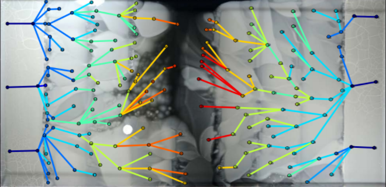
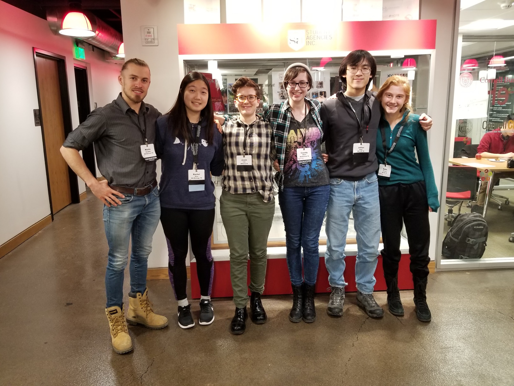

Why Antimicrobial Resistance?
Antimicrobial resistance (AMR) is a growing threat. Researchers and medical professionals have been struggling to gather and centralize data on antibiotic-resistant pathogens, and only recently have more comprehensive databases for tracking of AMR infections and genes emerged.
What is ARDVARC?

ARDVARC builds on the ease of culturing and sequencing bacteria that have evolved in lab settings to produce AMR-related mutations. By comparing a wild-type genome against a large set of possible past or future mutations, we can point to places where future mutations might occur for this genome. This makes it easier to find AMR-related patterns in the genome. Given continuously falling genome sequencing prices and the subsequent rise in accessibility of whole-genome sequencing, we aim to consolidate the computational work involved in processing the sequenced genomes. With ARDVARC, researchers can conveniently perform almost all the bioinformatics analysis they need in one easy step.
Who is ARDVARC for?
Researchers in hospitals and universities will find ARDVARC useful as they collect samples of wild-type bacteria and seek to understand what AMR-related mutations might occur next.
What else could ARDVARC be used for?
When complete, we anticipate that ARDVARC can be used for comparing genomes in a variety of applications - anywhere where high-throughput culturing and the resulting sequencing data is available. ARDVARC can be adapted to check a genome against past and future mutations for any purpose, not just AMR.
How could ARDVARC be improved?
Right now, ARDVARC needs the following:
- A database, and tagging/metadata functions. It is not currently connected to a database, but this would be a vital step in availability and functionality.
- More computational power. In a non-demo version, ARDVARC takes a very long time to run.
- More data. While some genomic data is available, the data that's useful for ARDVARC must be of a specific type.
Who is THE RESISTANCE?

We are a diverse group of biologists, engineers, and computer scientists all with the shared goal of improving the treatment of the antibiotic resistance crisis. Rachel Diao, Cassidy Mileti, and Martin Stübler make up the the biological sciences division, responsible for understanding the problems and needs of researchers in the field. Julian Eng and Suzie Petryk are data scientists who created a random-forest-based algorithm to process genomic data. Jessie Taft is responsible for the the visualization of the data and website design.
How did you make this project?
Genome Classification
The genome classifier was written in Python. It uses a random forest algorithm to identify sites that contribute most to variation in resistance.
Visualization & Web
The visualization tool was adapted from work by Matthew Laird.
Sponsorship & Support
ARDVARC was created for the 2018 Health Hackathon, sponsored by Cornell University, the National Science Foundation, GlaxoSmithKline, and Johnson & Johnson. The team thanks the Hackathon mentors for their ideas and encouragement, especially David Orbach, Ilana Brito, and Laura Goodman.